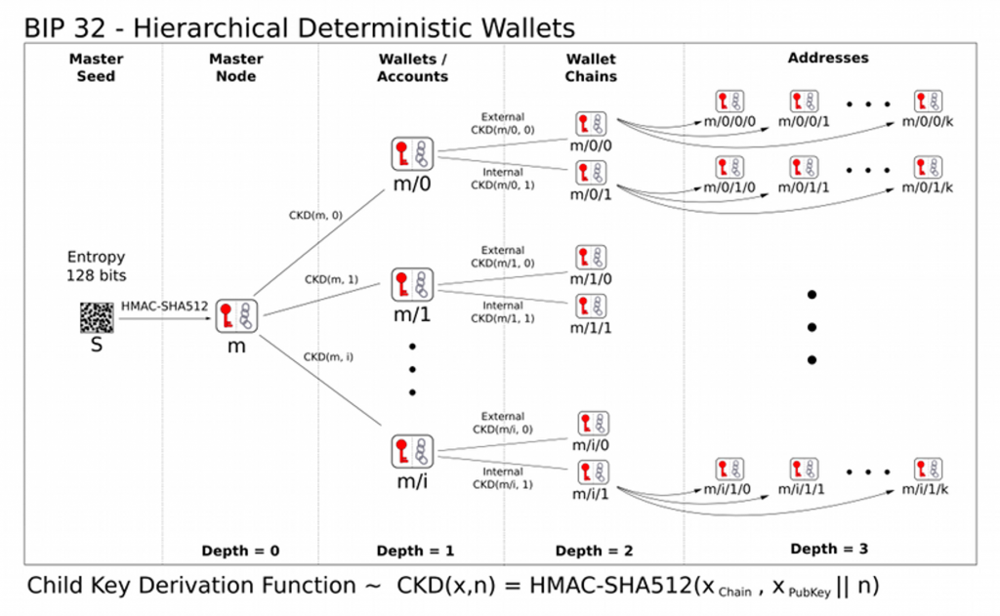
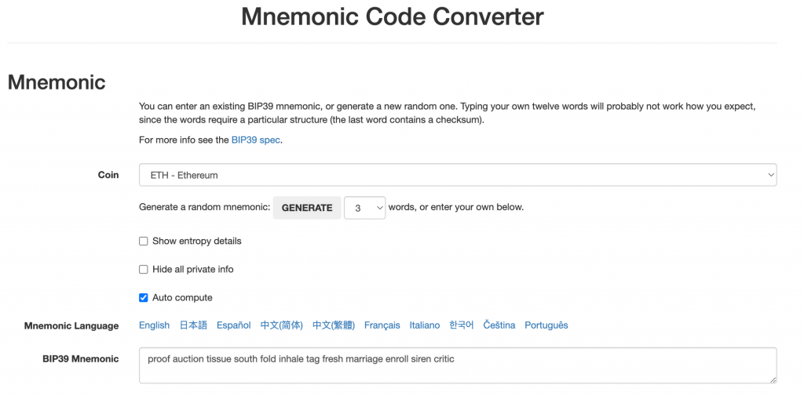
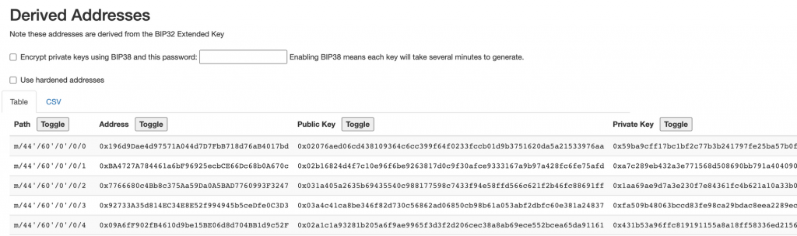
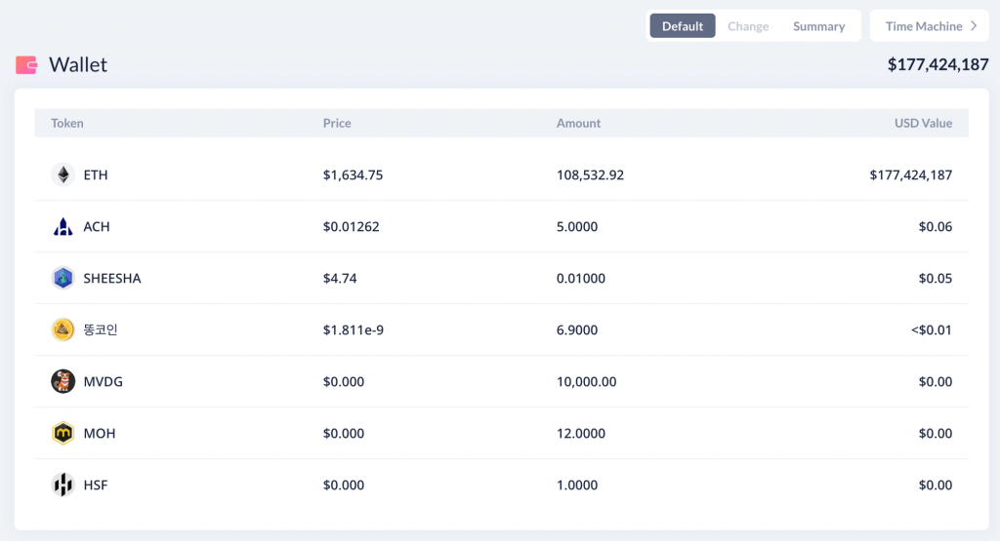
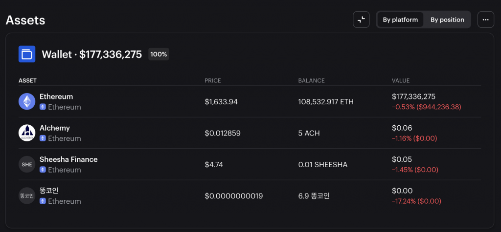
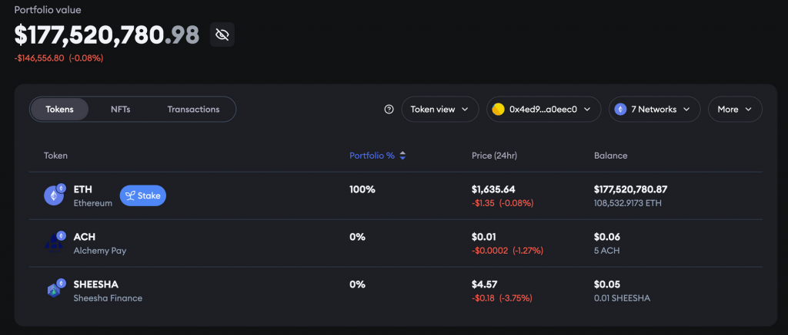
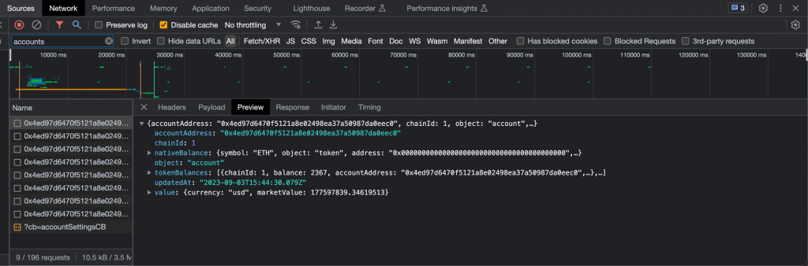
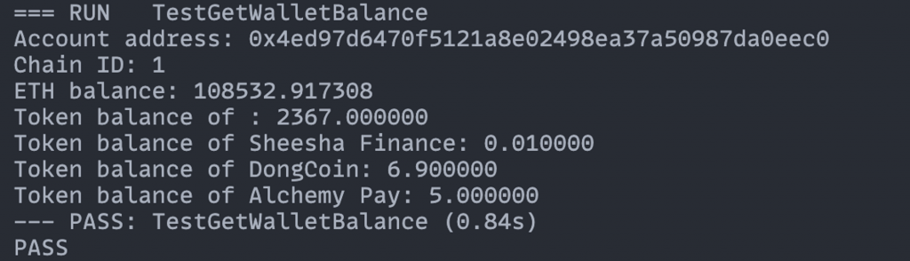

前一天已經實作完錢包登入的雛形，這個錢包在使用者的瀏覽器 Extension 內管理的。而有些時候也會需要在後端管理錢包，例如當使用者要把幣打到中心化交易所的入金地址時，交易所會產生一個錢包地址給使用者，並保管好這個錢包的私鑰，使用者入金完成後再自動把這個錢包內的幣轉到歸集錢包中（這樣就能統一把使用者的資金放在幾個大錢包中）。
因此今天我們會來實作產生註記詞、私鑰及錢包地址的功能。有了地址後就能取得他在鏈上的代幣餘額、持有的 NFT 數量等資訊，這樣才能基於這些資訊來自動發送轉出代幣的交易。不過今天我們會先專注在讀取資料的階段，明天才會進到發送交易的實作。
要介紹如何產生錢包就必須細講一下註記詞跟私鑰之間的關係，以及私鑰是如何從註記詞被產生的。回顧一下註記詞的樣子長這樣：
[code] proof auction tissue south fold inhale tag fresh marriage enroll siren critic
[/code]
這邊先只考慮 12 個字的註記詞（12 ~ 24 個字都有可能）。這個格式就是 BIP-39 標準定義的，寫清楚了要用哪些英文單字以及為何選擇這些字等等。在 BIP-39 中總共有 2048 個英文單字，也就是 2 的 11 次方，代表一個單字內會有 11 bits 的資訊量，而 12 個字加起來總共就有 132 bits，這樣就剛好可以對應到一個 128 bits 的隨機數（剩下的 4 個 bits 是會是前 128 bits 的 checksum 來提高容錯率）。這個 128 bits 的隨機數就是能用來產生大量錢包私鑰的根源，也被稱為 seed （因此註記詞又被稱為 seed phrase）
有了這個 128 bits 的隨機數後，接下來就可以透過 BIP-32
標準定義的演算法從他衍生出大量的錢包。他會先從 seed 算出一個 master key
（對應到下圖中的 Master
Node），接下來就可以產生一整個樹狀結構的錢包們，每個點都是一個錢包（因此有對應的公私鑰）。所以當沿著這棵樹往右邊走的時候，選擇不同的路徑（分支）就會產生不同的錢包，而且他的特點是只要
seed 跟路徑參數是固定的，就會產生確定的錢包公私鑰，所以這個標準才被稱為
Hierarchical Deterministic Wallet（階層式確定性錢包），簡稱 HD
Wallet。至於路徑參數會是長得像 m/0/1/1
的字串，代表每一步往右走時選擇的分支是什麼。

但是一個 seed
可以產生太多的錢包公私鑰了，對以太坊來說要怎麼知道一個註記詞預設產生的錢包是哪個呢？這就是
BIP-44
定義的內容了。它規定如果要從 seed 產生預設的比特幣錢包，就要使用
m/44'/0'/0'/0/0
這個路徑參數。而如果要產生預設的以太坊錢包，就要使用
m/44'/60'/0'/0/0 ，他們的差別在路徑的第二個數字不同，這就是
BIP-44 中定義不同的鏈必須要用他對應的數字來產生錢包（定義列表）。
有了第一個錢包後，第二個錢包就只要對路徑的最後一個數字 +1 就能從 seed
算出來了，後續的錢包就可以以此類推。另外在路徑上有個 '
代表這是 hardened
derivation，是個提高安全性的機制，有興趣的讀者可以再深入研究。
了解以上概念後就能理解接下來的程式碼。以下會使用 go-bip39 套件來產生註記詞，以及 go-ethereum-hdwallet 套件來產生這個註記詞對應的兩個預設錢包。直接來看實作：
[code] package main
import (
"fmt"
"log"
"github.com/ethereum/go-ethereum/accounts"
"github.com/ethereum/go-ethereum/common/hexutil"
"github.com/ethereum/go-ethereum/crypto"
hdwallet "github.com/miguelmota/go-ethereum-hdwallet"
"github.com/tyler-smith/go-bip39"
)
// GenerateMnemonic generate mnemonic
func GenerateMnemonic() string {
entropy, err := bip39.NewEntropy(128)
if err != nil {
log.Fatal(err)
}
mnemonic, err := bip39.NewMnemonic(entropy)
if err != nil {
log.Fatal(err)
}
return mnemonic
}
// DeriveWallet derive wallet from mnemonic and path. It returns the account and private key.
func DeriveWallet(mnemonic string, path accounts.DerivationPath) (*accounts.Account, string, error) {
wallet, err := hdwallet.NewFromMnemonic(mnemonic)
if err != nil {
return nil, "", err
}
account, err := wallet.Derive(path, false)
if err != nil {
return nil, "", err
}
privateKey, err := wallet.PrivateKey(account)
if err != nil {
return nil, "", err
}
privateKeyBytes := crypto.FromECDSA(privateKey)
return &account, hexutil.Encode(privateKeyBytes), nil
}
func main() {
mnemonic := GenerateMnemonic()
fmt.Printf("mnemonic: %s\n", mnemonic)
path := hdwallet.MustParseDerivationPath("m/44'/60'/0'/0/0")
account, privateKeyHex, err := DeriveWallet(mnemonic, path)
if err != nil {
log.Fatal(err)
}
fmt.Printf("1st account: %s\n", account.Address.Hex())
fmt.Printf("1st account private key: %s\n", privateKeyHex)
path = hdwallet.MustParseDerivationPath("m/44'/60'/0'/0/1")
account, privateKeyHex, err = DeriveWallet(mnemonic, path)
if err != nil {
log.Fatal(err)
}
fmt.Printf("2nd account: %s\n", account.Address.Hex())
fmt.Printf("2nd account private key: %s\n", privateKeyHex)
}[/code]
可以看到在使用 GenerateMnemonic() 內的
bip39.NewMnemonic() 產生註記詞後，搭配
m/44'/60'/0'/0/0 以及 m/44'/60'/0'/0/1的
derivation path 就可以產生前兩個以太坊的錢包地址與私鑰，中間使用了
hdwallet 的 Derive() 來達成目的。執行結果如下：
[code] mnemonic: proof auction tissue south fold inhale tag fresh marriage enroll siren critic 1st account: 0x196d9Dae4d97571A044d7D7FbB718d76aB4017bd 1st account private key: 0x59ba9cff17bc1bf2c77b3b241797fe25ba57b0f76c2707f620b9e557b55c5638 2nd account: 0xBA4727A784461a6bF96925ecbCE66Dc68b0A670c 2nd account private key: 0xa7c289eb432a3e771568d508690bb791a404090d16ac5dffb4d53796e8b36277
[/code]
至於驗證這個結果是否正確的方式，可以到 Mnemonic Code Converter 輸入這個產生的註記詞，並在 Coin 欄選擇 Ethereum，往下滑就可以看到預設產生的地址與私鑰是跟上面的程式碼吻合的。如果把這個註記詞導入一個錢包 app 中，預設顯示的前兩個地址也會跟上面產生的一致。


有了錢包地址後下一步要來實作取得這個地址的所有 ERC-20 Token。在 Day 5 時我們實作了取得單一 Token 的 Balance 資訊，但要怎麼知道一個地址有哪些 ERC-20 Token 呢？所有資料一定都紀錄在區塊鏈上，但這個功能如果要自己實作整理鏈上資料的話會比較複雜，我會放到後面的 Web3 與進階後端的主題再講。
好消息是有一些區塊鏈的資料提供商已經幫我們做好區塊鏈地址持有 Token
的資料 indexing 了，比較有名的網站有 Debank, Zerion 以及 Metamask
Portfolio，都可以在上面輸入一個地址查詢這個地址有的 Token
Balance。在 Etherscan 的 Accounts
頁面可以找到一些以太坊上大戶的錢包，隨便拿一個地址
0x4Ed97d6470f5121a8E02498eA37A50987DA0eEC0
來測試這三個網站的結果：
以下是依序的呈現結果，可以看到他們呈現的結果不完全相同（這裡只先過濾出以太坊鏈的餘額，因為預設會顯示多鏈的 Token）：



會有這些差異主要是因為不同服務在判斷一個 ERC-20 Token 是否有效的標準不同。因為區塊鏈上很常出現詐騙的 Token 以及合約，會透過偽造 Smart Contract Event 來誤導使用者或是誘導點擊進入釣魚網站，不同服務會實作自己過濾詐騙代幣的方式，因此是個複雜的議題。
接下來以下示範用 Metamask Portfolio 的 API 來實作取得地址的 Token
Balance。這個 API 雖然不在公開文件中，但因為 Metamask Portfolio 網站打的
API 沒有做太多限制，可以簡單的從 Browser Network Tab
看到請求的細節。稍微找一下就可以找到請求的網址是 https://account.metafi.codefi.network/accounts/0x4ed97d6470f5121a8e02498ea37a50987da0eec0?chainId=1&includePrices=true

展開對應的欄位如 nativeBalance,
tokenBalances 可以看到更多細節。因此就可以基於這個 API
來實作了：
[code] // balance.go package main
import (
"fmt"
"log"
"github.com/go-resty/resty/v2"
)
type AccountPortfolioResp struct {
AccountAddress string `json:"accountAddress"`
ChainID int `json:"chainId"`
NativeBalance TokenBalance `json:"nativeBalance"`
TokenBalances []TokenBalance `json:"tokenBalances"`
Value struct {
Currency string `json:"currency"`
MarketValue float64 `json:"marketValue"`
}
}
type TokenBalance struct {
Address string `json:"address"`
Name string `json:"name"`
Symbol string `json:"symbol"`
IconURL string `json:"iconUrl"`
CoingeckoID string `json:"coingeckoId"`
Balance float64 `json:"balance"`
}
func AccountPortfolio(address string) (*AccountPortfolioResp, error) {
respData := AccountPortfolioResp{}
_, err := resty.New().
SetBaseURL("https://account.metafi.codefi.network").R().
SetPathParam("address", address).
SetQueryParam("chainId", "1").
SetQueryParam("includePrices", "true").
SetHeader("Referer", "https://portfolio.metamask.io/").
SetResult(&respData).
Get("/accounts/{address}")
if err != nil {
return nil, err
}
return &respData, nil
}
func GetWalletBalance(address string) {
resp, err := AccountPortfolio(address)
if err != nil {
log.Fatal(err)
}
fmt.Printf("Account address: %s\n", resp.AccountAddress)
fmt.Printf("Chain ID: %d\n", resp.ChainID)
fmt.Printf("ETH balance: %f\n", resp.NativeBalance.Balance)
for _, token := range resp.TokenBalances {
fmt.Printf("Token balance of %s: %f\n", token.Name, token.Balance)
}
}[/code]
實作方式就是單純的打 API 拉資料後印出來。其實這個 API 裡面還有很多豐富的資料，由於篇幅關係沒有全部寫出來，讀者可以從 API response 細看還有哪些資料可以用。而要整理到那麼多完整的資料是有難度的，因為有些資料在區塊鏈上沒有（如代幣的價格、Icon URL、Coingecko ID 等等），就要想辦法跟鏈下的資料對應起來。而且不同的鏈資料來源可能不同，實作的複雜度就會體現在這邊。
一樣寫個測試用剛才找到的大戶地址來測 GetWalletBalance
function：
[code] package main
import (
"testing"
"github.com/stretchr/testify/assert"
)
func TestGetWalletBalance(t *testing.T) {
GetWalletBalance("0x4Ed97d6470f5121a8E02498eA37A50987DA0eEC0")
assert.True(t, true)
}[/code]
執行 go test -v ./...
後結果如下，這樣就有成功抓到這個地址的 ETH Balance 以及 Token Balance
了！只是其中一個 Token Name 是空字串，可能是因為 Metamask 在 index
資料時沒抓到。

今天帶大家了解在後端如何從註記詞產生錢包，以及如何拿到一個錢包地址的所有 ERC-20 Token Balance，完整程式碼在這裡。其實 Debank 跟 Zerion 的 API 也可以拿到類似的結果，但欄位跟 Metamask API 也不完全相同。另外如果要拿一個錢包地址的所有 NFT（包含 ERC-721 及 ERC-1155）也已經有對應的 API 可以使用，像是 Alchemy 跟 Quicknode 都有提供，實際的串接跟能取得什麼資料內容就留給讀者練習。明天就會進入到後端管理的錢包如何送出交易的實作。